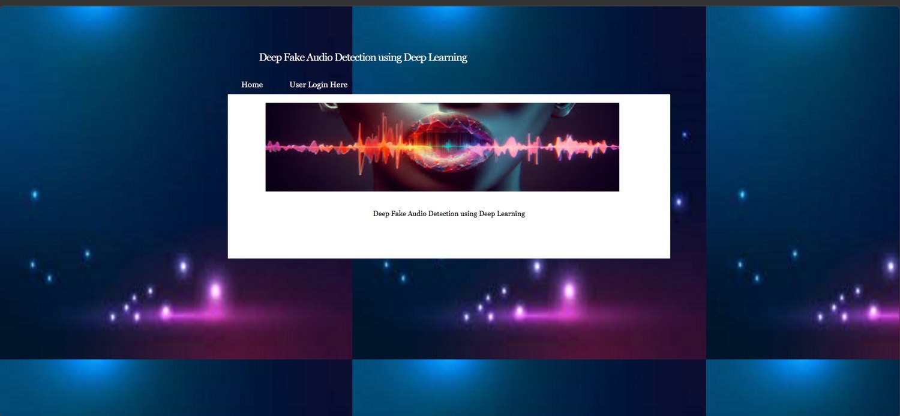

Academic Project · Deep Learning
DeepFake Audio Detection Using Deep Learning
A deep learning-based application that analyses audio characteristics to classify recordings as real or fake. The project uses MFCC features with a hybrid CNN-LSTM model and includes a web interface for audio uploads and detection results.